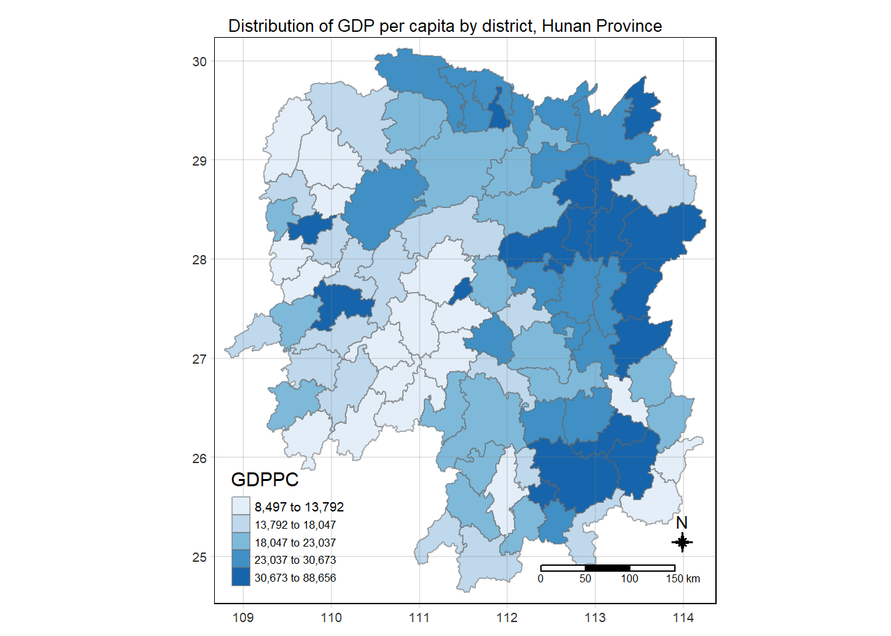

pacman::p_load(sf, sfdep, tidyverse, tmap)In-Class Exercise 6: Spatial Weights - sfdep method
1 Installing and Loading the R Packages
2 The Data
For the purpose of this in-class exercise, the Hunan data sets will be used. There are two data sets in this use case, they are:
Hunan, a geospatial data set in ESRI shapefile format, and
Hunan_2012, an attribute data set in csv format
2.1 Importing geospatial data
Import the data as an sf format.
hunan <- st_read(dsn="data/geospatial",
layer="Hunan")Reading layer `Hunan' from data source
`C:\guga-nesh\IS415-GAA\in-class_ex\in-class_ex06\data\geospatial'
using driver `ESRI Shapefile'
Simple feature collection with 88 features and 7 fields
Geometry type: POLYGON
Dimension: XY
Bounding box: xmin: 108.7831 ymin: 24.6342 xmax: 114.2544 ymax: 30.12812
Geodetic CRS: WGS 84# geographic coordinate system is not good for distance-based metrics, but if you're going for contiguity its ok2.2 Importing attribute table
Import the data as a tibble data frame.
hunan_2012 <- read_csv("data/aspatial/Hunan_2012.csv")
hunan_2012# A tibble: 88 × 29
County City avg_w…¹ depos…² FAI Gov_Rev Gov_Exp GDP GDPPC GIO
<chr> <chr> <dbl> <dbl> <dbl> <dbl> <dbl> <dbl> <dbl> <dbl>
1 Anhua Yiyang 30544 10967 6832. 457. 2703 13225 14567 9277.
2 Anren Chenzhou 28058 4599. 6386. 221. 1455. 4941. 12761 4189.
3 Anxiang Changde 31935 5517. 3541 244. 1780. 12482 23667 5109.
4 Baojing Hunan W… 30843 2250 1005. 193. 1379. 4088. 14563 3624.
5 Chaling Zhuzhou 31251 8241. 6508. 620. 1947 11585 20078 9158.
6 Changning Hengyang 28518 10860 7920 770. 2632. 19886 24418 37392
7 Changsha Changsha 54540 24332 33624 5350 7886. 88009 88656 51361
8 Chengbu Shaoyang 28597 2581. 1922. 161. 1192. 2570. 10132 1681.
9 Chenxi Huaihua 33580 4990 5818. 460. 1724. 7755. 17026 6644.
10 Cili Zhangji… 33099 8117. 4498. 500. 2306. 11378 18714 5843.
# … with 78 more rows, 19 more variables: Loan <dbl>, NIPCR <dbl>, Bed <dbl>,
# Emp <dbl>, EmpR <dbl>, EmpRT <dbl>, Pri_Stu <dbl>, Sec_Stu <dbl>,
# Household <dbl>, Household_R <dbl>, NOIP <dbl>, Pop_R <dbl>, RSCG <dbl>,
# Pop_T <dbl>, Agri <dbl>, Service <dbl>, Disp_Inc <dbl>, RORP <dbl>,
# ROREmp <dbl>, and abbreviated variable names ¹avg_wage, ²deposite2.3 Combining both data frames using left join
Combine the spatial and aspatial data. Since one is the tibble data frame and he other is an sf object, to retain geospatial properties, the left data frame must be sf (i.e., hunan)
# left_join() keeps all observations in x
# in this case, we did not mention the common identifier - by default uses common field
# after they have been joined, I want only columns 1-4, 7, and 15 (basically I just want the GDPPC from the hunan_2012)
hunan_GDPPC <- left_join(hunan, hunan_2012) %>%
select(1:4, 7, 15)
hunan_GDPPCSimple feature collection with 88 features and 6 fields
Geometry type: POLYGON
Dimension: XY
Bounding box: xmin: 108.7831 ymin: 24.6342 xmax: 114.2544 ymax: 30.12812
Geodetic CRS: WGS 84
First 10 features:
NAME_2 ID_3 NAME_3 ENGTYPE_3 County GDPPC
1 Changde 21098 Anxiang County Anxiang 23667
2 Changde 21100 Hanshou County Hanshou 20981
3 Changde 21101 Jinshi County City Jinshi 34592
4 Changde 21102 Li County Li 24473
5 Changde 21103 Linli County Linli 25554
6 Changde 21104 Shimen County Shimen 27137
7 Changsha 21109 Liuyang County City Liuyang 63118
8 Changsha 21110 Ningxiang County Ningxiang 62202
9 Changsha 21111 Wangcheng County Wangcheng 70666
10 Chenzhou 21112 Anren County Anren 12761
geometry
1 POLYGON ((112.0625 29.75523...
2 POLYGON ((112.2288 29.11684...
3 POLYGON ((111.8927 29.6013,...
4 POLYGON ((111.3731 29.94649...
5 POLYGON ((111.6324 29.76288...
6 POLYGON ((110.8825 30.11675...
7 POLYGON ((113.9905 28.5682,...
8 POLYGON ((112.7181 28.38299...
9 POLYGON ((112.7914 28.52688...
10 POLYGON ((113.1757 26.82734...2.4 Plotting Choropleth Map
tmap_mode("plot")
tm_shape(hunan_GDPPC)+
tm_fill("GDPPC",
style = "quantile",
palette = "Blues",
title = "GDPPC") +
tm_layout(main.title = "Distribution of GDP per capita by district, Hunan Province",
main.title.position = "center",
main.title.size = 0.8,
legend.height = 0.35,
legend.width = 0.25,
frame = TRUE) +
tm_borders(alpha = 0.5) +
tm_compass(type="8star", size = 1) +
tm_scale_bar() +
tm_grid(alpha =0.2)
# remember tm_fill and tm_borders will give you the tm_polygon, we do it like this to have a higher level of control on the visuals
# always output the map first to see where you can place the map components like scale bar, compass, etc.
# Classification Method: if you are designing for a regional economic study then you might want to use "equal interval" classification method. It depends on the purpose of our study.3 Identify area neighbours
Before the spatial weight matrix can be derived, the neighbours need to be identified first.
3.1 Contiguity neighbours method
st_contiguity() is used to derive contiguity neighbour list using Queen’s method. Documentation can be found here. Some key information:
It only works for sf geometry type
POLYGONorMULTIPOLYGON.By default, it uses queen (i.e.,
spdep::poly2nb).
cn_queen <- hunan_GDPPC %>%
mutate(nb = st_contiguity(geometry),
.before=1)
# use dplyr::mutate() to create new field that stores st_contiguity() on the geometry field
# .before = 1 basically puts the newly created field in the first column
Tip
EXTRA: Now, let us derive a contiguity neighbour list using Rook’s Method
cn_rook <- hunan_GDPPC %>%
mutate(nb = st_contiguity(geometry),
queen=FALSE,
.before=1)4 Computing contiguity weights
4.1 Contiguity weights: Queen’s method
wm_q <- hunan_GDPPC %>%
mutate(nb = st_contiguity(geometry),
wt = st_weights(nb),
.before = 1)
# this code, makes the above one redundant - please refer to the environment variable to see the nb and wt columns4.2 Contiguity weights: Rook’s method
wm_r <- hunan_GDPPC %>%
mutate(nb = st_contiguity(geometry),
queen=FALSE,
wt = st_weights(nb),
.before = 1)